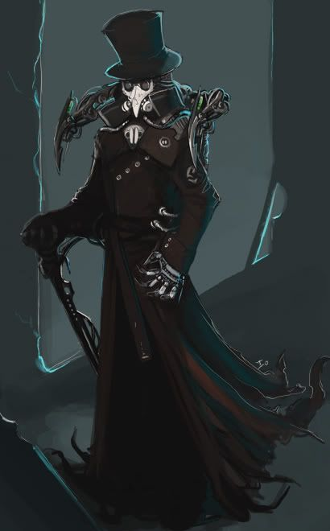
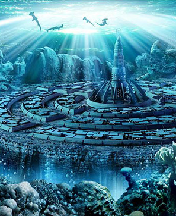

Une liste non exhaustive de scénario à tester pour vos soirées nerd
| N° | Jeu | Desctiption d'un scénario | Illustration | Musique adaptée |
|---|---|---|---|---|
| 1 | D&D | la chasse des dragons CarboneLes aventuriers sont plongés dans l'île-continent de Narvosh, une rencontre va plongée le groupe dans une discorde... La suite est plongée dans les ombres sous l'influence du dragon télépathe |
||
| 2 | Chronique Oubliée | Les document de Herbert FranlinDr.Franklin fut assassiné dans son chalet de montagne, les agents du secret services envoyés doivent résoudre le mystère de sa mort mais aussi déliées les noeuds complexes que ce décès entraine... |
 | |
| 3 | Pathfinder | La ruse de Martus VolvieLors du cambriolage échoué de la banque de Vorstick dans le nord de l'empire du Soleil. Gardus s'est fait emprisonné... Un groupe de sympatisans payé par un mystérieux gang doit récupéré le malheureux pour le forcer à livrer ses secrets... |
||
| 4 | Chronique Oubliée | L'île des fibustiersEquipage d'un navire contrebandier à la recherche d'un port d'escale, le navire sombre dans des eaux inconnues. Après un coma, les aventuriers doivent affronté une étrange île qui figure nul part sur les cartes... |
||
| 5 | Warhammer | La conquête du TrôneMashalor, un jeune lord veut récuperer le trône |
||
| 6 | Pathfinder | Joallier du roiLa fabrication d'un bijou royal est longue et semée d'embuches... Les nains sont les plus téméraires et les plus créatifs dans ce domaine |
||
| 7 | L’Appel de Cthulhu | L'ombre du ceréalierUne récolte ravagée, un monde qui part en vrille, une cité mystique qui renait, et un mythe qui grandit. Quel mystère vont découvir les agents de la couronne ? |
 | |
| N° | Jeu | Desctiption d'un scénario | Illustration | Musique adaptée |